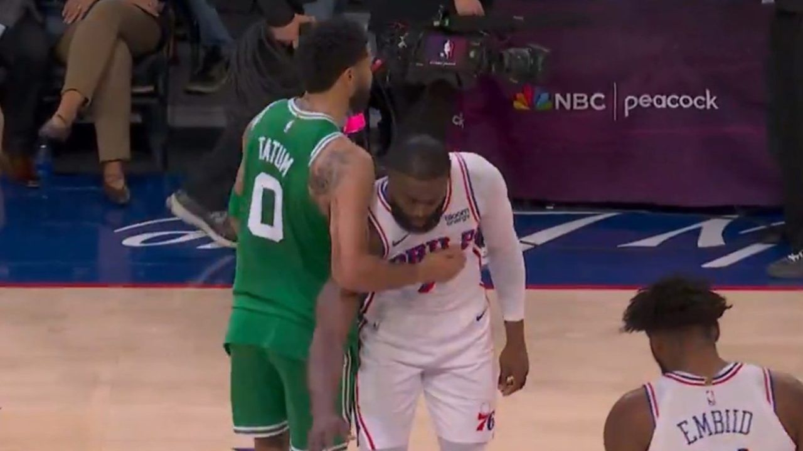
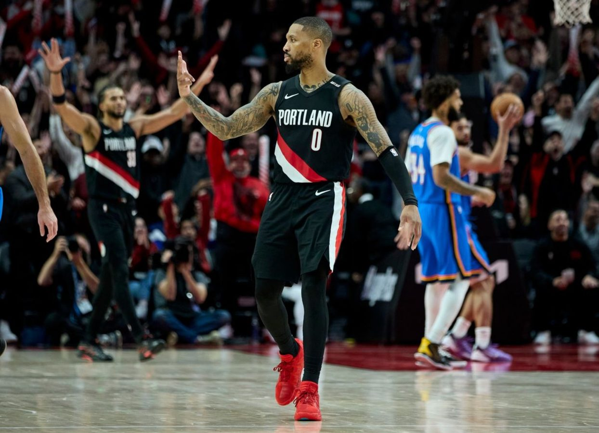
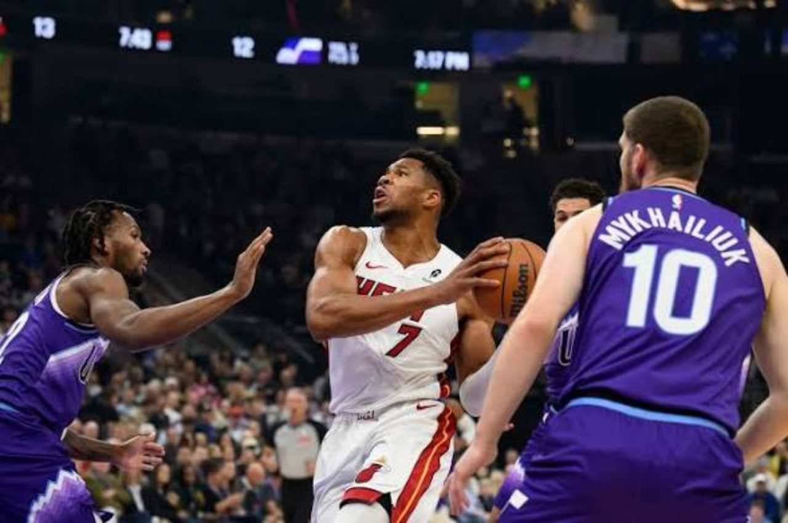
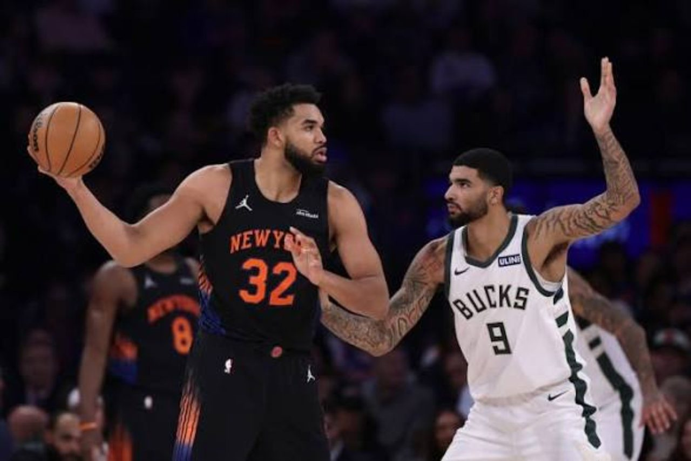
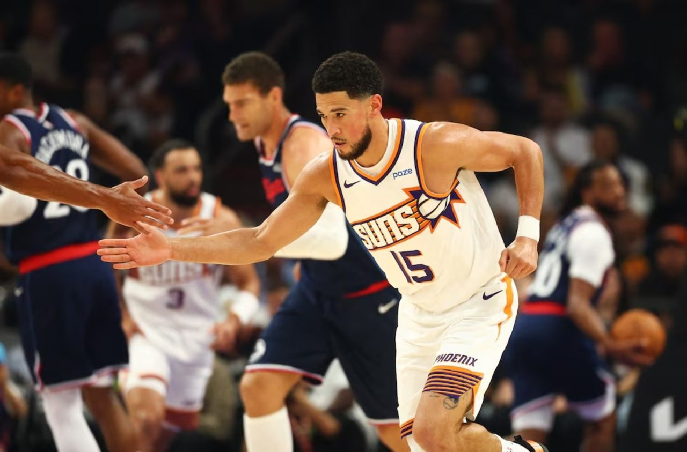
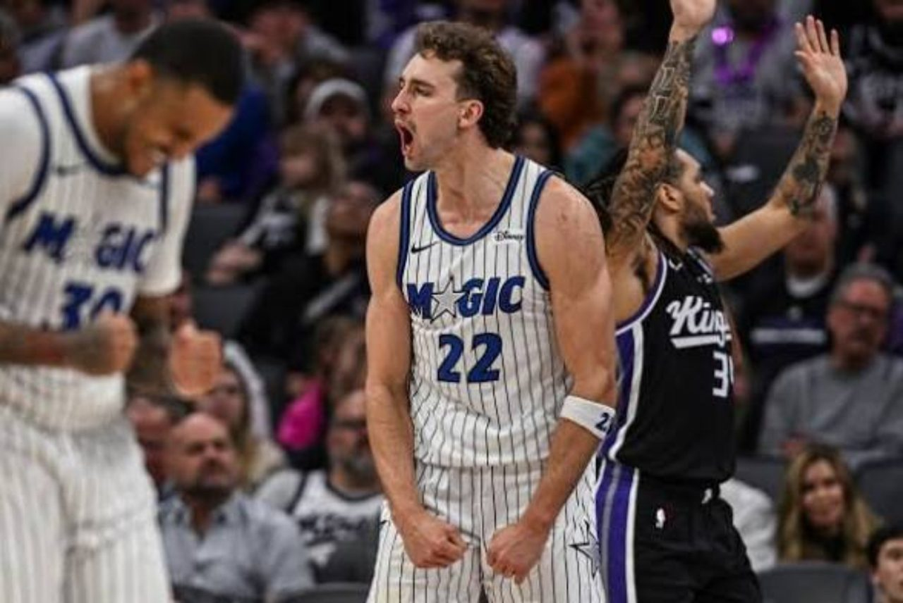

BOSTON CELTICS 123 — PHILADELPHIA 76ERS 101
PG's Revenge, Tatum and Brown's Cold Reunion, and a Celtics Warning Shot

For almost a decade, Jayson Tatum and Jaylen Brown were the faces of the same Boston project. They endured scrutiny, postseason setbacks and a championship journey together. Their first meeting on opposite sides was always going to be emotional. The pregame greeting made the tension impossible to ignore: Tatum approached Brown, who did not reciprocate in the moment. That public exchange is real; the private reasons for the distance remain theirs to explain. 4DK refuses to invent motives, but the image was unmistakably uncomfortable for anyone who watched them build something together.
Then Paul George took over the story. Back in Philadelphia wearing Celtics colors, George scored 36 points on 14-for-22 shooting, including six threes in 11 attempts. He wasn't simply hot from the perimeter. He changed the geometry of the defense: when the Sixers stayed attached to Boston's other shooters, George found room to work; when they leaned toward him, Boston's spacing created another opening. Jayson Tatum added 21 points, six rebounds and four assists. Brown finished with 13 points in a difficult night marked by foul trouble, while Tyrese Maxey led Philadelphia with 24.
Boston led 91–82 after three quarters, but the margin did not yet reflect a blowout. Payton Pritchard opened the fourth with consecutive threes, and George followed with eight straight points. The 14–0 burst turned a contest into a statement. Philadelphia did not make a fourth-quarter field goal until 7:37 remained. Boston finished with 22 made threes to Philadelphia's 11 and won the paint battle 46–32 despite attempting far fewer free throws.
Paul George: 36 PTS, 5 REB, 6 3PM · Jayson Tatum: 21 PTS, 6 REB, 4 AST · Tyrese Maxey: 24 PTS · Jaylen Brown: 13 PTS, 5 REB
4DK Verdict
Boston is forcing a reassessment. A top-three Eastern seed is no longer a wild suggestion if the Celtics maintain this level of defensive discipline and perimeter production. The personal drama is compelling, but the more consequential basketball question is whether this new version of Boston has a championship ceiling of its own.
PORTLAND TRAIL BLAZERS 123 — OKLAHOMA CITY THUNDER 103
Portland Didn't Steal a Win. It Took Control.

At halftime the teams were level at 59. Oklahoma City had the reigning contender's confidence and Shai Gilgeous-Alexander's shot creation, but Portland had a second-half gear the Thunder couldn't match. The Blazers won the third quarter 38–21, turning an even game into a 17-point advantage before the final period. Damian Lillard's deep shooting supplied the punctuation: back-to-back threes pushed the lead outward, and a logo-range make drove home just how completely the momentum had shifted.
Lillard scored 25, while Deni Avdija provided the all-around connective tissue with 24 points, eight assists and six rebounds. Sidy Cissoko contributed 17, and Donovan Clingan grabbed 13 boards. This was not an isolated veteran takeover; Portland won with multiple sources of offense, rebounding and decisive execution. The Thunder received 26 from Gilgeous-Alexander and 21 from Jared McCain, but SGA shot 8-for-22 and sat out the fourth quarter as the game slipped away.
Context matters. Oklahoma City was missing Jalen Williams, Chet Holmgren, Cason Wallace and Jaylin Williams. Those absences reduced the Thunder's defensive versatility and depth. Still, injuries do not explain away Portland's shot-making or its ability to impose tempo after halftime. A team that wants respect in the West has to demonstrate it against high-level opposition, and this was a meaningful demonstration.
Damian Lillard: 25 PTS · Deni Avdija: 24 PTS, 8 AST, 6 REB · Shai Gilgeous-Alexander: 26 PTS, 8 REB · Jared McCain: 21 PTS
4DK Verdict
At 7–3, Portland has earned a place in the Western Conference playoff conversation. The immediate rematch offers an important test: can the Blazers reproduce their execution once Oklahoma City adjusts?
MIAMI HEAT 115 — UTAH JAZZ 109
Giannis Wins the Night. Darryn Peterson Announces Himself.

Miami's victory looked comfortable until it wasn't. Giannis Antetokounmpo delivered 30 points on 12-for-21 shooting, 11 rebounds and four assists, helping the Heat build a lead that reached 23. The combination of Giannis's downhill force and Miami's complementary play put Utah in a difficult position: protect the rim and concede opportunities elsewhere, or stay home and allow a superstar to dictate the terms of the possession.
But the Jazz's young talent refused to let the game fade quietly. Darryn Peterson scored 25 on 10-for-19 shooting, adding four rebounds and four assists. Ace Bailey contributed 23 points and seven rebounds, while Isaiah Collier supplied 17 points and five assists. Utah outscored Miami 37–23 in the fourth, including an 11–0 run that reduced what had been a 19-point lead to eight. The final six-point margin reflected a real late push, not a cosmetic scoreline.
Peterson's aggression against an established star is the story that will travel beyond the result. He showed the confidence to seek shots rather than defer, though five turnovers and fouling out illustrate the developmental distance still ahead. Giannis, by contrast, demonstrated how to produce efficiently and remain a reliable anchor when a game becomes chaotic. Miami also needed its supporting cast: Davion Mitchell finished with 19 points and eight assists, while Bam Adebayo's defense mattered even on an inefficient shooting night.
Giannis Antetokounmpo: 30 PTS, 11 REB, 4 AST · Darryn Peterson: 25 PTS, 4 REB, 4 AST · Ace Bailey: 23 PTS, 7 REB · Davion Mitchell: 19 PTS, 8 AST
4DK Verdict
Miami escaped with the result; Utah left with more evidence that its young core can compete in stretches. The challenge for Peterson is turning fearless shot-making into four quarters of disciplined, winning basketball.
NEW YORK KNICKS 117 — MILWAUKEE BUCKS 85
The Knicks' Depth Turns a Competitive Game Into a Rout

New York didn't need an outrageous scoring night from any single star. It needed collective control, and the Knicks got it. Jalen Brunson led with 23 points, Karl-Anthony Towns added 21 and 16 rebounds, and OG Anunoby contributed 19 points with five made threes. The first decisive swing came in the second quarter: New York outscored Milwaukee 32–13, using defensive stops, reserve energy and timely perimeter shooting to take a 58–34 halftime lead.
What made this more impressive was the way the Knicks handled Milwaukee's brief response. The Bucks cut the deficit to 85–72 after three and scored first in the fourth, briefly creating the possibility of a tense finish. New York answered with force. Towns asserted himself inside, Anunoby connected from deep, and the lead quickly swelled beyond 20 again. A team with championship aspirations has to recognize those danger windows and shut them; the Knicks did exactly that.
The bench was more than a footnote. Tyler Kolek scored 12, Andre Drummond pulled down 14 rebounds in 15 minutes, and Miles McBride's minutes helped New York control the flow. No Knicks starter needed more than 28 minutes, a valuable benefit with another game scheduled the next night. Milwaukee, without Tyler Herro because of a bruised knee, got 16 from Jaime Jaquez Jr. and 14 from Ryan Rollins, but its seventh straight loss exposed how little margin for error this roster currently has.
Jalen Brunson: 23 PTS · Karl-Anthony Towns: 21 PTS, 16 REB · OG Anunoby: 19 PTS, 5 3PM · Jaime Jaquez Jr.: 16 PTS
4DK Verdict
The Knicks have won four straight and six of seven after an 0–3 start. Their response to Milwaukee's third-quarter push was the mark of a team beginning to establish habits. For the 1–10 Bucks, the issue is no longer a slow start; it is finding a sustainable formula on both ends.
PHOENIX SUNS 133 — LA CLIPPERS 110
Twenty-Two Threes and a Phoenix Offensive Avalanche

Phoenix established the terms of the game almost immediately. The Suns held the Clippers to 18 first-quarter points, scored 29 themselves, and carried a 64–47 advantage into halftime. Collin Gillespie's 39-foot three just before the break was both a momentum play and a fitting symbol of the night: seemingly every stretch of floor felt within Phoenix's shooting range.
The Suns finished 22-for-43 from beyond the arc, an extraordinary combination of volume and efficiency. Jordan Goodwin returned from a calf injury to score 18 points in only 14 minutes, making six of seven three-point attempts. Devin Booker added 17, Luke Kennard scored 14, Jalen Green had 13, and Gillespie supplied 12 points and eight assists. Seven Phoenix players reached double figures. The attack wasn't dependent on Booker monopolizing possessions; the ball found whichever shooter the defense failed to account for.
The lead grew to 91–59 in the third quarter, and the outcome was effectively decided long before the final horn. The Clippers got 13 apiece from Rui Hachimura, Baba Miller and Darius Garland, but their 110 points conceal a more troubling reality: they never established meaningful defensive resistance. Phoenix scored 35 in the second, 35 in the third and 34 in the fourth. When an opponent maintains that pace for three consecutive quarters, the problem is structural, not merely a few unlucky makes.
Jordan Goodwin: 18 PTS, 6-for-7 3PT · Devin Booker: 17 PTS · Luke Kennard: 14 PTS · Collin Gillespie: 12 PTS, 8 AST
4DK Verdict
Phoenix showed what its offense can look like when its supporting shooters are confident and the ball moves. At 4–6, the Suns still need consistency. At 2–8, the Clippers urgently need answers for their defensive breakdowns and poor road form.
ORLANDO MAGIC 107 — SACRAMENTO KINGS 100
Wagner Carries Orlando, but Acuff Gives Sacramento a Glimpse of Its Future

Orlando needed a response after four straight losses, and Franz Wagner supplied one. His season-high 33 points came with seven rebounds and seven assists, and he went a perfect 10-for-10 at the foul line. Anthony Black delivered a complementary 26 points, seven rebounds, five assists and four steals. With Paolo Banchero, Jalen Suggs, Jonathan Isaac and Tristan da Silva unavailable, Orlando needed its remaining creators to shoulder more responsibility without losing structure.
The decisive sequence arrived in the second quarter. Wagner's three capped an 18–5 Magic run and gave Orlando a 52–43 lead with 3:10 left before halftime. The Kings never regained the lead. That is the difference between producing highlight plays and actually controlling a game: Orlando converted an offensive burst into an advantage it protected through the closing possessions.
Sacramento had two standout individual scorers. Zach LaVine poured in 31 points on 10-for-16 shooting and hit six of nine threes. Rookie Darius Acuff Jr. scored 29 and made four threes, continuing a remarkable opening stretch. He has 288 points through his first 11 games, one shy of Michael Jordan's 289 over the same span in 1984. Yet the Kings fell to 1–10 and remained winless at home. Domantas Sabonis returned but went scoreless in 24 minutes, a sharp contrast with the scoring burden carried by LaVine and Acuff.
Franz Wagner: 33 PTS, 7 REB, 7 AST · Anthony Black: 26 PTS, 7 REB, 5 AST, 4 STL · Zach LaVine: 31 PTS · Darius Acuff Jr.: 29 PTS, 4 3PM
4DK Verdict
Orlando's win is an important stabilizer amid injuries and a losing streak. Sacramento has genuine excitement in Acuff's production, but individual brilliance cannot substitute for coherent team execution. The Kings must find ways to translate their young guard's scoring into victories.
4DK PLAYER OF THE NIGHT
Paul George — Boston Celtics
Thirty-six points. Six made threes. A decisive fourth-quarter burst. A road win against his former team on one of the season's most emotionally charged nights. George gets the honor not only for the raw production, but for how his scoring directly separated the teams when the result was still in question.
Nightcap takeaway
Boston has announced itself, Portland has demanded a closer look, Miami has survived a scare, New York has found its rhythm, Phoenix has rediscovered its perimeter firepower, and Orlando has found a way to win through adversity. Six games, six distinct stories—and six reasons the standings alone never tell the whole story.